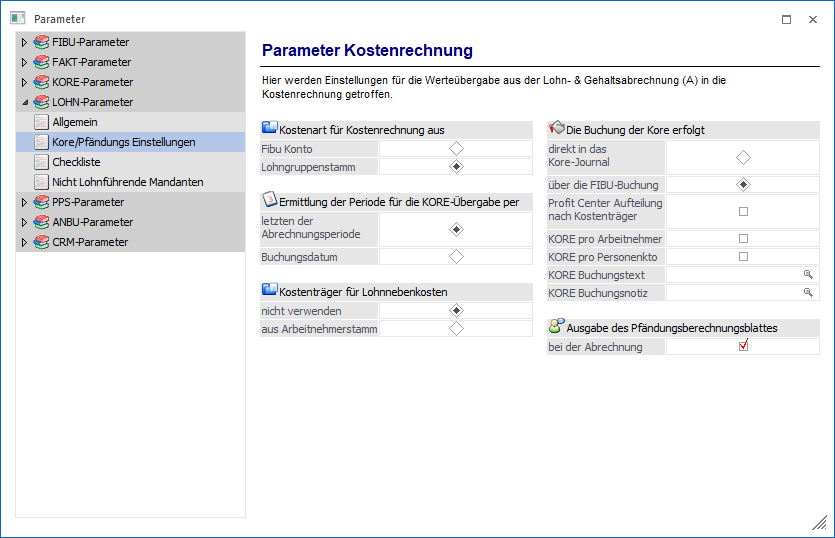

Kostenart für Kostenrechnung aus
Mit dieser Einstellung kann gesteuert werden, woher die Kostenarten für die Erfassungszeilen genommen werden sollen.
Ø Fibu-Konto
Wird diese Option gewählt, wird die Kostenart aus den FIBU-Konten ausgelesen, dass in den Lohngruppen hinterlegt wurde. Ist bei beiden Konten eine Kostenart eingetragen, wird keine Kostenart verwendet.
ü Vorteil:
Da die Kostenart beim
FIBU-Konto hinterlegt werden muss, kann es nicht vorkommen, dass z.B. eine nicht
existierende Kostenart hinterlegt wird.
ü Nachteil:
Wenn die
Kostenrechnung extern geführt wird, müssen die gewünschten Kostenarten trotzdem
in der WinLine KORE angelegt werden (z.B. als Demo-Benutzer).
Ø Lohngruppenstamm
Wird diese Option gewählt, wird die Kostenart aus der entsprechenden Spalte der Lohngruppen geholt, die hinterlegten Konten werden nicht geprüft.
Ermittlung der Periode für die Kostenrechnungsübergabe erfolgt per
Hier kann eingestellt werden, wie die Buchungsperiode für die Kostenrechnungsübergabe berechnet wird.
Dabei gibt es zwei Optionen:
ü Letzten der
Abrechnungsperiode
Standardeinstellung. Es wird immer der letzte der
Abrechnungsperiode genommen, danach wird festgestellt, in welcher
Buchungsperiode sich das Datum befindet, und in diese Periode wird dann
gebucht.
ü Buchungsdatum
Bei der
Kostenrechnungsübergabe kann ein Buchungsdatum eingegeben werden. Anhand dieses
Buchungsdatums wird dann die Buchungsperiode festgestellt.
Beispiel
Die Perioden in der WinLine FIBU sind so eingestellt, dass eine Periode jeweils vom 26. bis zum 25. des Folgemonats reicht (amerikanisches System) (Periode 1 = 26.1. bis 25.2, Periode 2 = 26.2 bis 25.3. etc.).
Mit der Option "letzten der Abrechnungsperiode" würden nun die Kostenrechnungszeilen des Februars in die Buchungsperiode 2 gebucht werden.
Mit der Option "Buchungsdatum" werden - wenn z.B. der 24.2. als Buchungsdatum eingegeben wird - die Kostenrechnungszeilen des Februars in die Buchungsperiode 1 gebucht.
Kostenträger für Lohnnebenkosten
Mit dieser Option kann eingestellt werden, ob für die Übergabe der Lohndaten in die Kostenrechnung der Kostenträger berücksichtigt werden soll. Dabei gibt es 2 Optionen:
ü nicht verwenden
Wenn diese
Option eingestellt ist, dann werden die Lohnnebenkosten ohne Kostenträger in die
Kostenrechnung übergeben.
ü aus Arbeitnehmerstamm
Bei
Verwendung dieser Option wird der Kostenträger aus dem AN-Stamm für die Übergabe
der Lohnnebenkosten herangezogen.
Hinweis
Diese Einstellung gilt nur für die Lohnnebenkosten. Für die Erfassungszeile wird nach wie vor der Kostenträger aus der Erfassungszeile verwendet.
Die Buchung der Kore erfolgt
In diesem Bereich kann eingestellt werden, wie die Kostenrechnungsdaten vom WinLine LOHN gebucht werden sollen:
ü direkt in das Kore-Journal
Bei
dieser Option wird die KORE-Übergabe über einen eigenen Menüpunkt im WinLine
LOHN durchgeführt und es gibt keinen Zusammenhang zwischen KORE- und
FIBU-Buchungen.
Vorteil
Der Vorteil beim direkten Schreiben der KORE-Daten liegt darin, dass die Übergabe jederzeit wiederholt werden kann, wobei die "alten" Daten gelöscht werden, d.h. die Werte sind dann trotzdem nicht doppelt vorhanden.
Nachteil
Es gibt keinen Zusammenhang zu FIBU-Buchungen, wodurch eine FIBU/KORE-Verprobung nicht möglich ist.
ü über die FIBU-Buchung
Bei
dieser Option werden die KORE-Buchungen im Zuge des FIBU-Stapels erstellt. D.h.
bei der FIBU-Buchung gibt es auch eine entsprechende
KORE-Aufteilungsbuchung.
Vorteil
Mit dieser Variante ist auch eine FIBU/KORE-Verprobung möglich.
Nachteil
Wenn nachträgliche Änderungen durchzuführen sind, müssen auch die Buchungen, wo die Kostenrechnungs-Infos dranhängen, entsprechend geändert bzw. berücksichtigt werden.
Hinweis
Wenn die Option "über die FIBU-Buchung" eingestellt ist, dann kann im WinLine LOHN der Menüpunkt
1 Abschluss
1 Kore Buchungen
nicht mehr angewählt werden.
Wenn die Option "über die FIBU-Buchungen" aktiviert ist, können noch zusätzliche Optionen eingestellt werden:
Ø Profit Center Aufteilung nach Kostenträger
Wenn diese Option aktiviert wird, dann kann die Profit Center Aufteilung nicht nur nach Kostenstellen, sondern auch nach Kostenträgern erfolgen, wobei diese Aufteilung sowohl für die Bezüge als auch für die Lohnnebenkosten gültig sind. D.h. innerhalb der Kostenstelle gibt es dann auch die Möglichkeit, eine Aufteilung nach Kostenträgern vorzunehmen. Wenn diese Option aktiviert ist, dann wird im AN-Stamm die Profit Center Erfassung um eine Tabelle (für die Kostenträger) erweitert.
Achtung
Wenn eine Aufteilung nach Kostenträger durchgeführt werden soll, dann ist darauf zu achten, dass die verwendeten Kostenarten nicht als "Gemeinkostenart" definiert ist!
Ø KORE pro Arbeitnehmer
Durch Aktivieren dieser Option wird die Kostenrechnungsübergabe pro AN durchgeführt, d.h. die Kosteninformationen werden nicht auf KSt/KoArt/KTr komprimiert, sondern es werden alle Datensätze pro AN erstellt.
Ø KORE pro Personenkonto
Durch Aktivieren dieser Option wird für die Kostenrechnungsübergabe auch das Personenkonto der Erfassungszeile mit übergeben
Ø KORE Buchungstext
In diesem Feld kann ein frei definierbarer Buchungstext für die Kostenrechnungsübergabe hinterlegt werden, wobei der Text sowohl fixe als auch variable Teile beinhalten kann. Über die Matchcode-Funktion (F9-Taste) können Variablen aus dem Bereich "Lohngruppen - Kontierungen", AN-Stamm und Abrechnung ausgewählt und übernommen werden. Diese Variablen werden in der Form z.B. "<VAR:420/1>" dargestellt (420 steht in diesem Beispiel für die Tabelle und 1 für die Variable, in dem Fall bedeutet die Variable die AN-Nummer).
Hinweis
Der Buchungstext ist 50 Stellen lang.
Ø KORE Buchungsnotiz
In diesem Feld kann eine frei definierbare Buchungsnotiz (zusätzlich zum Buchungstext) für die Kostenrechnungsübergabe hinterlegt werden, wobei der Text sowohl fixe als auch variable Teile beinhalten kann. Über die Matchcode-Funktion (F9-Taste) können Variablen aus dem Bereich "Lohngruppen - Kontierungen", AN-Stamm und Abrechnung ausgewählt und übernommen werden. Diese Variablen werden in der Form z.B. "<VAR:420/1>" dargestellt (420 steht in diesem Beispiel für die Tabelle und 1 für die Variable, in dem Fall bedeutet die Variable die AN-Nummer).
Ausgabe des Pfändungsberechnungsblattes
Durch Aktivieren der Option
Ø bei der Abrechnung
wird - sofern eine Pfändung vorhanden ist - bei der Abrechnung das Pfändungsberechungsblatt mit ausgegeben und auch gleich automatisch archiviert. Damit ist es möglich, errechneten und einbehaltenen Pfändungsbetrag jederzeit nachvollziehen zu können.